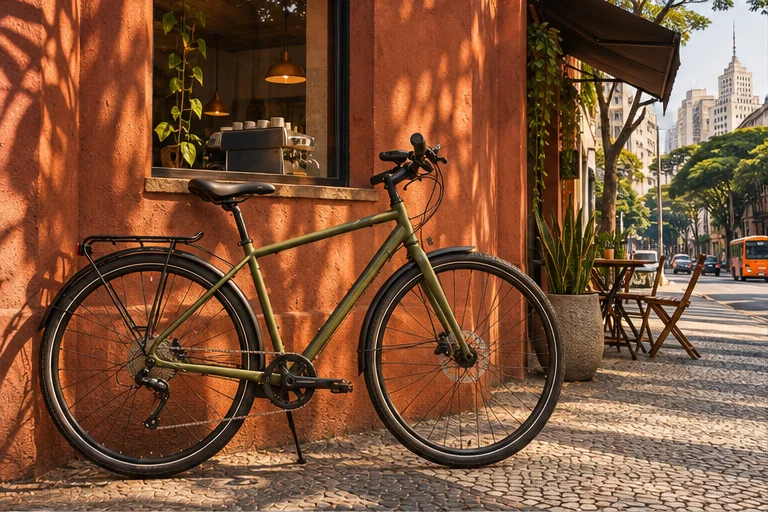

O que você sentiu no pedal?
Um ruído na subida ou uma marcha que escapou? Registre o que percebeu e leve um relato claro para a oficina.
Começar o relato
Monte seu relato
Escolha as situações que mais se aproximam do seu pedal. A oficina usa o contexto para orientar a conversa.